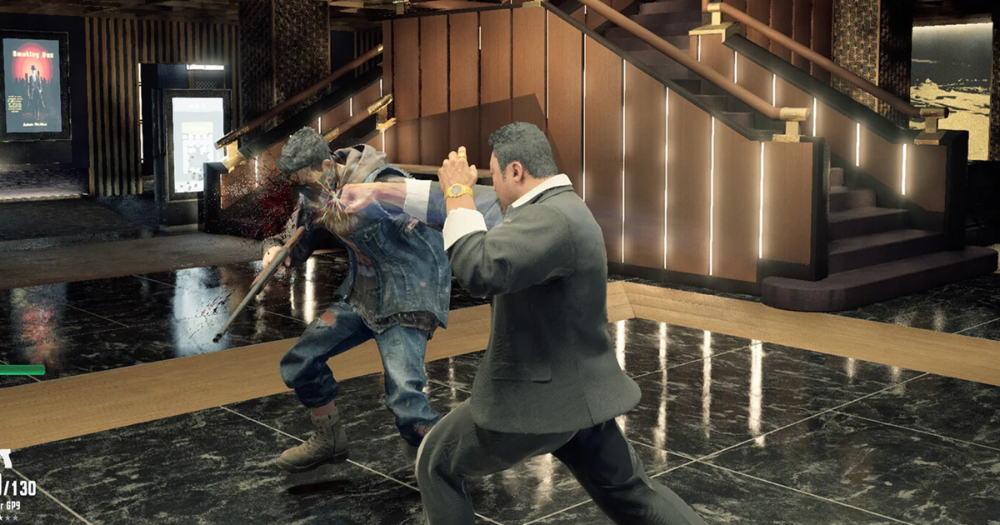

Gaming · 03 Nov 2026
Yakuza creator's new studio and its debut game Gang of Dragon are no more after losing funding from NetEase

Nagoshi Studio has officially shut down and its first game called Gang of Dragon is seemingly no more, months after publisher NetEase pulled funding from the Yakuza-like project. Read more
Multiple independent publishers are reporting on the same development: Yakuza creator's new studio and its debut game Gang of Dragon are no more after losing funding from NetEase.
The available reports place the development in the Gaming category. The accounts were compared for agreement on the central event rather than simply shared names or broad topics.
One of the available reports describes the development this way: Nagoshi Studio has officially shut down and its first game called Gang of Dragon is seemingly no more, months after publisher NetEase pulled funding from the Yakuza-like project. Read more
Readers should consult the linked source reports for additional context, updates and details that may change as the story develops.
Sources
This article was produced by the C. O. Eric AI Newsroom from the cited sources. It is published only after automated evidence and safety checks.